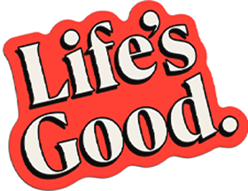

MAKE THE TUNES AND SOMEONE'S DAY


Scroll down
We scroll, swipe, and tap "likes" every day.
But are we really connecting with each other?
Perhaps what we need are heart-to-heart connections.

It's why we're bringing our “Life’s Good“ message through the universal language of music.
Create a tune for your someone special with LG Radio Optimism.
It’s easy. Think of someone special and put in a few words about them.
Then a one and only song comes to life, ready to be shared with a smile.

The moment you make a heartfelt song for someone, and the moment you receive one from other special, that's when a real connection lets us truly experience Life's Good.
How to – make your song
Just a couple of taps — it's that easy.
 Step into Radio Optimism.
Step into Radio Optimism.
Tap 'Let's Make a Hit' to join and begin your story.
Choose your preferred language to get started.
Songs made just for you


Learn about Life's Good